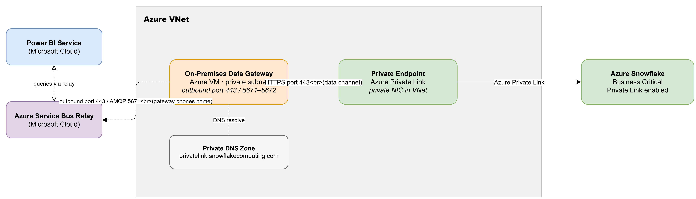
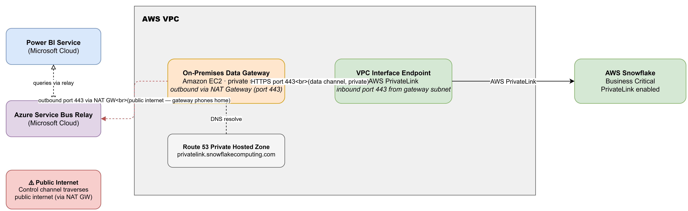
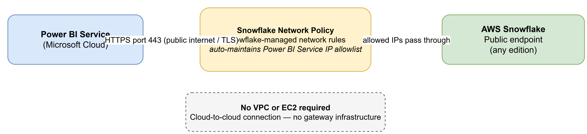

origin: ai-assisted · author: Sreenivasa Rao Nunna · contributors: Claude (analysis, diagrams, structure) · created: 2026-05-06 · last-updated: 2026-05-06 · version: v1.0
Veradigm is migrating its cloud platform from Azure to AWS. This document captures the architecture design work required to replicate and modernise existing PowerBI connectivity patterns in the new AWS environment.
For each use case, the document presents the current Azure architecture, the target AWS architecture, and the key differences and migration decisions that the team must resolve.
Confluence target: This document is the single source of truth published to
LSE / PowerBI-AWS Architecture Design.
All edits should be made here and pushed via push_to_confluence.py.
Production Power BI connects to production Snowflake through a fully private network path — no traffic traverses the public internet for the data plane. This use case documents the current Azure implementation and the target AWS equivalent.
Power BI Service is a Microsoft SaaS product hosted in the Microsoft cloud. To reach private data sources, it relies on an On-premises data gateway — a Windows service installed inside an Azure VM that sits within the corporate VNet. The gateway establishes an outbound control channel to Azure Service Bus Relay; Power BI communicates with the gateway through this relay, so no inbound firewall ports are needed on the VM. Data queries travel from the gateway to Snowflake via an Azure Private Endpoint inside the same VNet, never leaving the Microsoft/Azure private backbone.

Figure 1 — Current architecture: Power BI → On-premises Data Gateway (Azure VM) → Private Endpoint → Azure Snowflake
| Component | Type | Location | Notes |
|---|---|---|---|
| Power BI Service | Microsoft SaaS | Microsoft Cloud | Sends queries to the gateway via Azure Service Bus Relay |
| Azure Service Bus Relay | Azure managed service | Microsoft Cloud | Acts as the relay for the control channel between Power BI and the gateway |
| On-premises Data Gateway | Windows service on Azure VM | Azure VNet (private subnet) | Initiates outbound connection to Service Bus Relay on port 443 / AMQP 5671–5672. No inbound ports required. |
| Private DNS Zone | Azure DNS | Azure, linked to VNet | Zone: privatelink.snowflakecomputing.com. Resolves Snowflake hostname to the private endpoint IP. |
| Private Endpoint | Azure Private Link | Azure VNet (private NIC) | Assigns a private IP to the Snowflake connection inside the VNet. |
| Azure Snowflake | Snowflake SaaS | Azure (Business Critical or higher) | Private Link must be enabled at the Snowflake account level. |
xy12345.privatelink.snowflakecomputing.com) using the Private DNS Zone linked to the VNet, which returns the Private Endpoint's private IP address.Key security property: The data plane (gateway → Snowflake) is entirely private. The control plane (gateway → Azure Service Bus) also stays on the Microsoft/Azure backbone since the VM and Service Bus are both in the Azure ecosystem.
Two options are available. The choice depends on whether a fully private data path to Snowflake is required by policy.
| Dimension | Option A — EC2 + AWS PrivateLink | Option B — Direct Connector, No Gateway |
|---|---|---|
| EC2 / VPC required | Yes | No |
| Snowflake data path | Private (AWS PrivateLink) | Public internet (TLS) |
| Gateway infrastructure | On-premises data gateway on EC2 | None |
| NAT Gateway needed | Yes (for gateway → Azure Service Bus) | No |
| Snowflake edition required | Business Critical or higher | Any edition |
| Infrastructure cost | Medium (EC2 + NAT Gateway) | Minimal |
| Setup complexity | High | Low |
| Choose when | Private data path is a compliance or security requirement | TLS over public internet is acceptable |
The On-premises data gateway moves from an Azure VM to an Amazon EC2 instance inside an AWS VPC. The gateway-to-Snowflake data path is private via AWS PrivateLink (VPC Interface Endpoint). DNS is resolved through a Route 53 Private Hosted Zone.
One constraint carries over from Azure: the gateway's control channel to Azure Service Bus Relay still traverses the public internet — Power BI Service is a Microsoft product with no AWS PrivateLink endpoint. Only the data path (gateway → Snowflake) is private.

Figure 2 — Option A: Power BI → On-premises Data Gateway (EC2) → VPC Interface Endpoint → AWS Snowflake
| Component | Type | Location | Notes |
|---|---|---|---|
| Power BI Service | Microsoft SaaS | Microsoft Cloud | Sends queries via Azure Service Bus Relay — unchanged |
| Azure Service Bus Relay | Azure managed service | Microsoft Cloud | Still used. No AWS equivalent for the Power BI control channel. |
| On-premises Data Gateway | Windows service on EC2 | AWS VPC (private subnet) | Same software as Azure. Requires NAT Gateway for outbound access to Azure Service Bus. Port 443 outbound required. |
| NAT Gateway | AWS managed | AWS VPC (public subnet) | Provides outbound internet for the EC2 gateway → Azure Service Bus control channel. |
| Route 53 Private Hosted Zone | AWS DNS | AWS, associated with VPC | Zone: privatelink.snowflakecomputing.com. CNAME to VPC Endpoint DNS name. |
| VPC Interface Endpoint | AWS PrivateLink | AWS VPC | Interface endpoint for Snowflake. SG must allow HTTPS port 443 inbound from gateway subnet. |
| AWS Snowflake | Snowflake SaaS | AWS (Business Critical or higher) | AWS PrivateLink must be enabled at the account level. Snowflake provides the service name for the VPC endpoint. |
Constraint: The control channel (gateway → Azure Service Bus → Power BI Service) always traverses the public internet in AWS. Only the data channel (gateway → Snowflake) is private. Mitigate by restricting the EC2 Security Group outbound to Azure Service Bus relay FQDNs on port 443 only.
Power BI Service connects directly to Snowflake using its native Snowflake connector — no On-premises data gateway, no EC2, no VPC required. Traffic travels over the public internet (TLS-encrypted). A Snowflake Network Policy using Snowflake-managed network rules automatically maintains the Power BI Service IP allowlist, so no manual IP management is needed.

Figure 3 — Option B: Power BI → Snowflake Network Policy → AWS Snowflake (public endpoint, no gateway)
| Component | Type | Location | Notes |
|---|---|---|---|
| Power BI Service | Microsoft SaaS | Microsoft Cloud | Uses the native built-in Snowflake connector. Supports both Import and DirectQuery modes. |
| Snowflake Network Policy | Snowflake configuration | Snowflake account | Snowflake-managed network rules automatically maintain Power BI Service IP ranges. No manual IP list updates required. |
| AWS Snowflake | Snowflake SaaS | AWS (any edition) | Public endpoint must be accessible. Business Critical edition not required. |
Trade-off: Data travels over the public internet (TLS-encrypted). There is no private network path in this option. Choose Option A if your security policy mandates private connectivity for data in transit.
| Dimension | Azure (Current) | Option A — EC2 + PrivateLink | Option B — Direct Connector |
|---|---|---|---|
| Gateway host | Azure VM (Windows) | Amazon EC2 (Windows, private subnet) | None — no gateway required |
| Snowflake data path | Private (Azure Private Link backbone) | Private (AWS PrivateLink) | Public internet (TLS) |
| Control channel | Stays on Azure/Microsoft backbone | Public internet (via NAT Gateway → Azure Service Bus) | N/A — no gateway |
| DNS | Azure Private DNS Zone | Route 53 Private Hosted Zone (same zone name) | Public DNS (Snowflake public FQDN) |
| Snowflake edition | Business Critical + Private Link enabled | Business Critical + AWS PrivateLink enabled | Any edition |
| IP / network management | VNet + NSG rules | VPC + Security Groups + NAT Gateway | Snowflake-managed network rules (automatic) |
| Infrastructure cost | Azure VM + VNet | EC2 + NAT Gateway + VPC Endpoint | Minimal (no extra AWS infrastructure) |
| High availability | Gateway cluster recommended (2+ VMs) | Gateway cluster recommended (2+ EC2) | Inherent (Power BI Service SaaS) |
The items below are unresolved. Team members should update this section as decisions are made and push the updated document to Confluence.
| # | Question | Owner | Status |
|---|---|---|---|
| 1 | Which target option is selected — Option A (EC2 + PrivateLink) or Option B (Direct Connector)? This is the foundational decision that determines all downstream infrastructure choices. | — TBD — | Open — decision required before any AWS provisioning |
| 2 | What AWS region will the Snowflake account be in? (Option A only) The VPC Interface Endpoint and Route 53 PHZ must be in the same region. | — TBD — | Open |
| 2 | Is the AWS Snowflake account already provisioned at Business Critical tier? PrivateLink requires Business Critical or higher. | — TBD — | Open |
| 3 | Which AWS VPC / subnet will host the EC2 gateway? Does it already exist or does it need to be created? | — TBD — | Open |
| 4 | Is a NAT Gateway already available in the target VPC for outbound internet access (gateway → Azure Service Bus)? | — TBD — | Open |
| 5 | How many gateway instances are needed for high availability? Microsoft recommends at least two gateways in a cluster. | — TBD — | Open |
| 6 | Are there additional use cases beyond UC1 (e.g. other data sources, DirectQuery vs Import mode differences)? | PowerBI Team | Open — team to add use cases to this document |